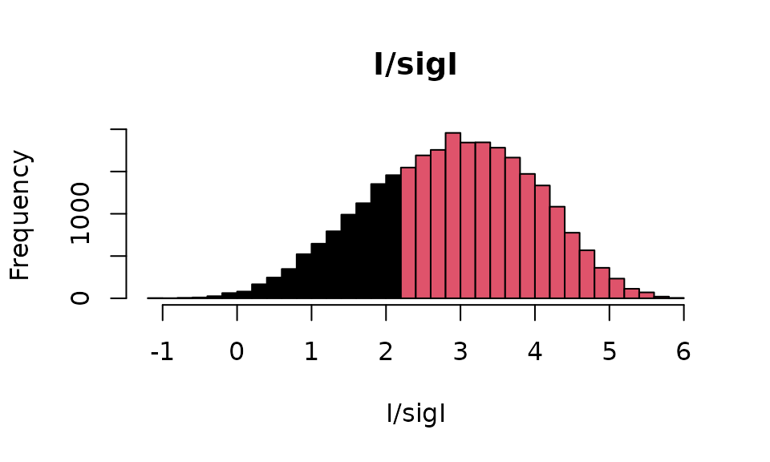
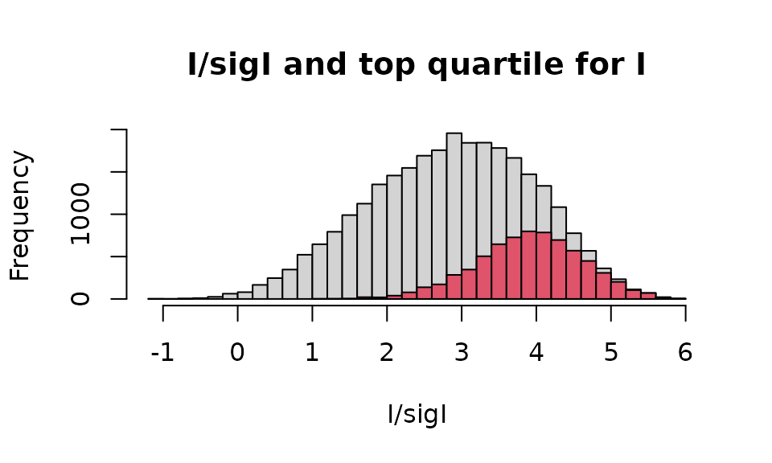
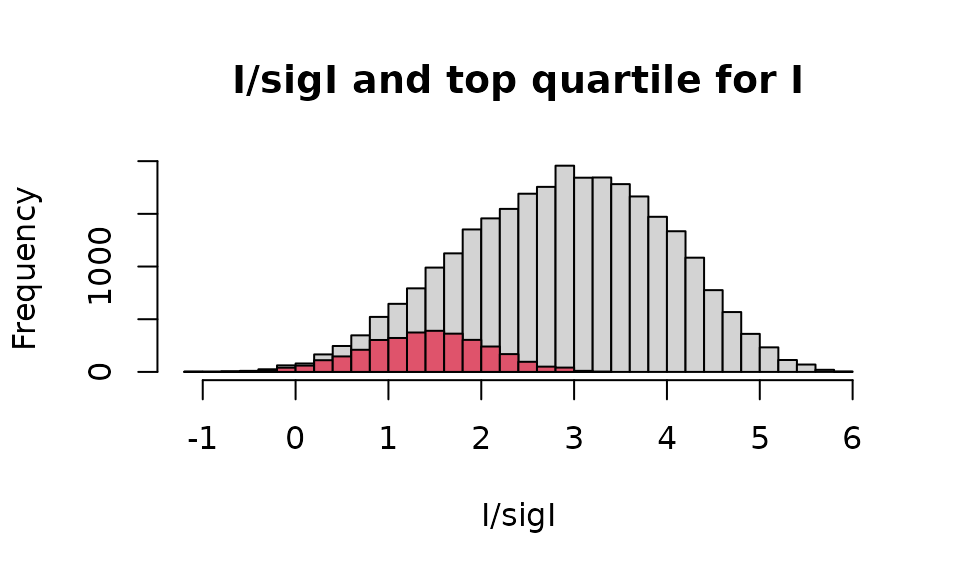

Read and analyse an XDS file
XDS.RmdIntroduction
Main aim of this tutorial is to load the full content of two different XDS files in the workspace, to analyse and modify data for one of the two files, and to write the modified content into a new XDS file.
Sample XDS file
Some sample files are stored as external data in this package. Among
them there are two XDS files available with the current release. To
access the files, first load the cry package.
Next, have a look at what is included in the external-data directory
of cry.
datadir <- system.file("extdata",package="cry")
all_files <- list.files(datadir)
print(all_files)
#> [1] "1dei_phases.mtz" "1dei-sf.cif"
#> [3] "2ol9_phases.mtz" "3syu.cif"
#> [5] "6vww_xds_ascii_merged.hkl" "AMS_DATA.cif"
#> [7] "e-65-00i60-Isup2.rtv" "shelxc.log"
#> [9] "shelxd.log" "shelxe_i.log"
#> [11] "shelxe_o.log" "xds00_ascii.hkl"The two XDS files we are interested in are “xds00_ascii.hkl” and
“6vww_xds_ascii_merged.hkl”. Both files can be loaded using function
readXDS_ASCII.
Two types of XDS files
The cry function readXDS_ASCII can load in
the R working memory both XDS reflection files produced by XDS and
XSCALE. Their formats differ slightly. Let’s start by loading
“xds00_ascii.hkl”, which is created by the ’CORRECT’component of XDS.
The created object is a named list.
filename <- file.path(datadir,"xds00_ascii.hkl")
objXDS1 <- readXDS_ASCII(filename)
class(objXDS1)
#> [1] "list"
names(objXDS1)
#> [1] "processing_info" "header" "reflections"Each component of is either a named list, or a data frame. More specifically:
-
processing_infoIt’s a small named list with names
MERGE,FRIEDELandPROFILE_FITTING. All these components are logical variables (TRUE/FALSE). IfMERGEis TRUE, the file has been produced by XSCALE. IfFRIEDELis TRUE, the Bijvoet pairs have been averaged to respect Friedel’s law.PROFILE_FITTINGis only TRUE for files produced by XDS. -
headerThis is a longer named list with components related to the diffraction experiment including for example the oscillation range, the fraction of polarization, the rough cell parameters’ estimate, etc.
-
reflectionsThese are the experimental observations, i.e. the integrated intensity, its error, and other qualities for each triplet of Miller indices. They are included in a data frame.
# 'reflections' is a data frame
print(class(objXDS1$reflections))
#> [1] "data.frame"
# First 5 observations
print(objXDS1$reflections[1:5,])
#> H K L IOBS SIGMA.IOBS. XD YD ZD RLP PEAK CORR PSI
#> 1 0 0 -35 61.77 128.4 2094.2 664.4 6.4 0.17998 92 7 62.60
#> 2 0 0 -36 137.70 136.3 2120.2 645.5 10.3 0.18539 99 8 62.91
#> 3 0 0 -38 -29.38 153.9 2172.7 607.6 18.0 0.19628 100 -7 63.53
#> 4 0 0 -39 -23.68 158.5 2199.2 588.5 21.9 0.20176 100 -7 63.85
#> 5 0 0 -40 73.30 161.0 2226.0 569.5 25.8 0.20726 100 8 64.16A file produced by XSCALE has in general a smaller number of data columns:
# Load the other XDS ascii file
filename <- file.path(datadir,"6vww_xds_ascii_merged.hkl")
objXDS2 <- readXDS_ASCII(filename,message=TRUE)
#>
#> File read successfully.
#> There are 27951 reflections in this file.
#> Here is a summary of the observations:
#>
#> Min. 1st Qu. Median Mean 3rd Qu. Max.
#> -1.085 2.089 2.920 2.868 3.684 5.888
# This file has been produced by XSCALE
print(objXDS2$processing_info$MERGE)
#> [1] TRUE
# First 5 observations
print(objXDS2$reflections[1:5,])
#> H K L IOBS SIGMA.IOBS.
#> 1 0 0 4 192900 78780
#> 2 0 0 6 1707000 694600
#> 3 0 0 8 16670000 6782000
#> 4 0 0 10 224900 93500
#> 5 0 0 12 7838000 3189000The XDS reflections
Let us focus on the dataset produced by XSCALE. The full set of data is contained, as seen, in a data frame structure. This makes it easy to carry out the usual selection, reshaping and statistical operations normally available in R.
# Copy reflections data for the first and
# second dataset, to save on later typing
refs1 <- objXDS1$reflections
refs2 <- objXDS2$reflections
# Check whether the set of reflections is unique
# Dataset 1
nrefs1 <- length(refs1[,1])
print(nrefs1)
#> [1] 3315
n_unique1 <- length(unique(refs1[,1:3])[,1])
print(n_unique1)
#> [1] 3315
# Dataset 2
nrefs2 <- length(refs2[,1])
print(nrefs2)
#> [1] 27951
n_unique2 <- length(unique(refs2[,1:3])[,1])
print(n_unique2)
#> [1] 27951Both datasets have only one value per reflection. But the space group associated with the first dataset is P1, while the space group associated with the second dataset is P -3 1 c, belonging to the trigonal crystal system.
# Space group of first dataset
print(objXDS1$header$SPACE_GROUP_NUMBER)
#> [1] 1
# Space group of second dataset
print(objXDS2$header$SPACE_GROUP_NUMBER)
#> [1] 163
# Extended Hermann-Mauguin symbol for symmetry n 163
SG <- translate_SG(163)$msg
print(SG)
#> [1] "P -3 1 c"This means that while the reflections of the second file are actually the result of averaging among multiple values of equivalent reflections (both because of multiplicity and symmetry), those of the first file derive from averaging due to multiplicity; once the symmetry for the crystal structure has been established, some of the reflections will be related by symmetry and a new unique set can be calculated after the appropriate merging.
Data selection can be carried out using conditions on the intensities, for example. Let us consider the second dataset and single out those reflections with .
# Names of data columns
names(refs2)
#> [1] "H" "K" "L" "IOBS" "SIGMA.IOBS."
# Selection based on I/sigI > 2
idx <- which(refs2$IOBS/refs2$SIGMA.IOBS > 2)
print(length(idx)) # 21579 reflections have I/sigI > 2
#> [1] 21579Visually, the separation between reflections with and those with can be demonstrated with a frequency histogram.
# Create new I/sigI array
isi <- refs2$IOBS/refs2$SIGMA.IOBS
# Histogram
hh <- hist(isi,breaks=30,plot=FALSE)
cuts <- cut(hh$breaks,c(-Inf,2,Inf))
plot(hh,main="I/sigI",xlab="I/sigI",col=cuts)
Data selection can also follow a different ordering of the data. Consider again, in dataset 2, the first 10 reflections:
# First reflections in original data ordering
print(refs2[1:10,])
#> H K L IOBS SIGMA.IOBS.
#> 1 0 0 4 192900 78780
#> 2 0 0 6 1707000 694600
#> 3 0 0 8 16670000 6782000
#> 4 0 0 10 224900 93500
#> 5 0 0 12 7838000 3189000
#> 6 0 0 14 3230000 1859000
#> 7 0 0 16 118200 51690
#> 8 0 0 18 2158000 878600
#> 9 0 0 20 16970 35280
#> 10 0 0 22 433600 181900
# We could, next, sort the data from the largest to the smallest value of the intensity:
# First create the ordering index
idx <- order(refs2$IOBS,decreasing=TRUE)
# Now display the first 10 reflections. They correspond to the
# 10 reflections with highest intensity
print(refs2[idx[1:10],])
#> H K L IOBS SIGMA.IOBS.
#> 13 0 0 28 18660000 7591000
#> 3 0 0 8 16670000 6782000
#> 1081 6 -2 -8 12950000 3746000
#> 3753 11 -3 0 12730000 3999000
#> 3996 11 -1 -3 9507000 2552000
#> 120 2 -1 -2 9322000 3794000
#> 9415 17 0 15 9287000 3168000
#> 1396 7 -3 -6 9004000 3665000
#> 3070 10 -3 -6 8756000 1967000
#> 1807 8 -4 -4 8733000 2939000Or, we could sort the data according to the decreasing values of :
# Ordering index
idx <- order(refs2$IOBS/refs2$SIGMA.IOBS,decreasing=TRUE)
# Display first 10 highest I/sigI reflections
print(refs2[idx[1:10],])
#> H K L IOBS SIGMA.IOBS.
#> 2481 9 -3 20 2202000 374000
#> 166 2 0 17 2441000 415400
#> 1200 6 -1 -14 2438000 416500
#> 684 5 -2 -29 1052000 180700
#> 2058 8 -2 31 1176000 202800
#> 3345 10 -1 23 1599000 276000
#> 1304 6 0 27 1944000 335900
#> 1387 7 -3 -15 2502000 432500
#> 1301 6 0 24 1534000 266000
#> 1305 6 0 28 1262000 219000To verify that the operation is correct, we can add a new column to
the original refs2 data frame and verify that the previous
ordering corresponds, indeed, to decreasing values of
:
# Add an I/sigI column
refs2 <- cbind(refs2,data.frame(IsigI=refs2$IOBS/refs2$SIGMA.IOBS))
# Now display with the order previously obtained
print(refs2[idx[1:10],])
#> H K L IOBS SIGMA.IOBS. IsigI
#> 2481 9 -3 20 2202000 374000 5.887701
#> 166 2 0 17 2441000 415400 5.876264
#> 1200 6 -1 -14 2438000 416500 5.853541
#> 684 5 -2 -29 1052000 180700 5.821804
#> 2058 8 -2 31 1176000 202800 5.798817
#> 3345 10 -1 23 1599000 276000 5.793478
#> 1304 6 0 27 1944000 335900 5.787437
#> 1387 7 -3 -15 2502000 432500 5.784971
#> 1301 6 0 24 1534000 266000 5.766917
#> 1305 6 0 28 1262000 219000 5.762557We can also carry out routine statistics of the values of the data frame. It is very quick, for instance, to obtain summary statistics for all the columns:
summary(refs2)
#> H K L IOBS
#> Min. : 0.00 Min. :-15.000 Min. :-62.000 Min. : -537600
#> 1st Qu.:15.00 1st Qu.: -8.000 1st Qu.:-28.000 1st Qu.: 202750
#> Median :21.00 Median : -4.000 Median : 4.000 Median : 417600
#> Mean :20.15 Mean : -5.041 Mean : 1.997 Mean : 635462
#> 3rd Qu.:26.00 3rd Qu.: -2.000 3rd Qu.: 32.000 3rd Qu.: 810750
#> Max. :30.00 Max. : 0.000 Max. : 62.000 Max. :18660000
#> SIGMA.IOBS. IsigI
#> Min. : 2992 Min. :-1.085
#> 1st Qu.: 91430 1st Qu.: 2.089
#> Median : 144600 Median : 2.920
#> Mean : 196604 Mean : 2.868
#> 3rd Qu.: 238500 3rd Qu.: 3.684
#> Max. :7591000 Max. : 5.888Specific types of data visualisation
The advantage of having crystallographic data imported in R is that they can be exposed to several types of data visualisation and statistical analysis available in the platform. In this section an histogram visualisation has been created for the original dataset, in which that part of the histogram corresponding to is coloured differently. This is not an operation easily achievable with standard crystallographic software, but relatively easy to carry out using R.
# Initial histogram
mtxt <- "I/sigI and top quartile for I"
hh <- hist(refs2$IOBS/refs2$SIGMA.IOBS,breaks=30,main=mtxt,
xlab="I/sigI")
# Find top quartile of I
top_qt <- quantile(refs2$IOBS)[4]
# Data with absolute intensity in the top quartile
idx <- which(refs2$IOBS >= top_qt)
# Colour portion of histogram in red
hist(refs2$IOBS[idx]/refs2$SIGMA.IOBS[idx],breaks=30,col=2,add=TRUE)
Another useful but not easily available visualisation is with
histograms where lowest or highest resolutions are highlighted in a
different colour. A resolution vector with the same ordering of the
original data frame must first be calculated with the cry
function hkl_to_reso and this can be then used to select
data with wanted resolution.
# Cell parameters are needed to calculate resolutions
cpars <- objXDS2$header$UNIT_CELL_CONSTANTS
# Resolutions in angstroms. (resos has been computed previously)
resos <- hkl_to_reso(refs2$H,refs2$K,refs2$L,cpars[1],cpars[2],cpars[3],
cpars[4],cpars[5],cpars[6])
summary(resos)
#> Min. 1st Qu. Median Mean 3rd Qu. Max.
#> 1.785 2.314 3.226 3.957 4.776 49.263
# Select high resolution data ( <= 2 angstroms)
idx <- which(resos <= 2)
# Now draw the histogram
mtxt <- "I/sigI and top quartile for I"
hh <- hist(refs2$IOBS/refs2$SIGMA.IOBS,breaks=30,main=mtxt,
xlab="I/sigI")
hist(refs2$IOBS[idx]/refs2$SIGMA.IOBS[idx],breaks=30,col=2,add=TRUE)
The above histogram reflects the unfortunate circumstance in structural x-ray crystallography, according to which high resolution data correspond on average to weak intensities.
Write data to an XDS file
The necessity to modify existing XDS ascii files or to simulate new
ones (by developers to test software, for example) can be satisfied with
the use of the writeXDS_ASCII function. The nature and
quality of the file produced will depend on the feasibility and accuracy
of the information provided. For this reason, it is more difficult to
write an XDS ascii file for unmerged data because a lot of information
of an experimental nature has to be provided so to produce a sensible
header.
In this section the original data from the “6vww_xds_ascii_merged.hkl” file will be truncated to 2 angstroms and written to a new XDS ascii file with a different date.
# Date
ddd <- as.character(Sys.Date())
stmp <- strsplit(ddd,"-")[[1]]
allMonths <- c("Jan","Feb","Mar","Apr","May","Jun",
"Jul","Aug","Sep","Oct","Nov","Dec")
objXDS2$header$DATE <- paste0(stmp[3],"-",
allMonths[as.integer(stmp[2])],"-",stmp[1])
# Generated by
objXDS2$header$GENERATED_BY <- "CRY"
# Data to 2 angstroms resolution
idx <- which(resos >= 2)
objXDS2$reflections <- objXDS2$reflections[idx,]
# Temporary directory for output
tdir <- tempdir()
fname <- file.path(tdir,"new.hkl")
# Write changed data to the new XDS ascii file
writeXDS_ASCII(objXDS2$processing_info,objXDS2$header,
objXDS2$reflections,fname)Data from the new XDS ascii file can either be explored using XDS
software, or read back into R using again
readXDS_ASCII.
# Read data from "new.hkl"
newXDS <- readXDS_ASCII(fname,message=TRUE)
#>
#> File read successfully.
#> There are 24689 reflections in this file.
#> Here is a summary of the observations:
#>
#> Min. 1st Qu. Median Mean 3rd Qu. Max.
#> -1.085 2.383 3.091 3.062 3.782 5.888